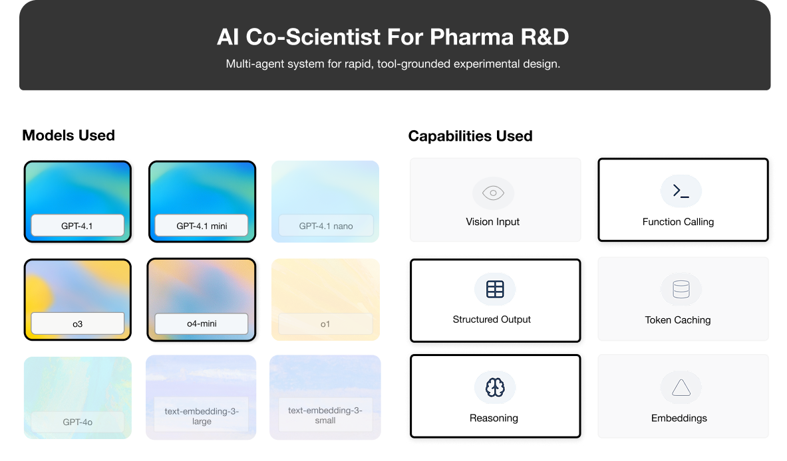
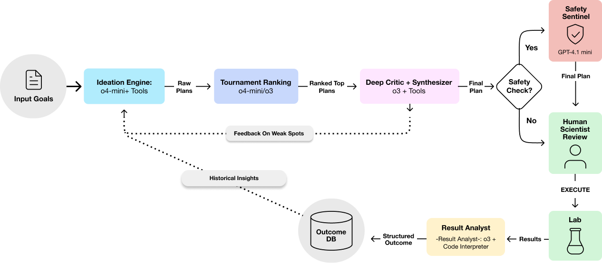

Use Case: AI Co-Scientist for Pharma R&D#

This section details how to build an AI system that functions as a “co-scientist” to accelerate experimental design in pharmaceutical R&D, focusing on optimizing a drug synthesis process under specific constraints.
🗂️ TL;DR Matrix#
This table summarizes the core technology choices and their rationale for this specific AI Co-Scientist implementation.
Layer |
Choice |
Utility |
|---|---|---|
Ideation |
o4-mini (Parallel Role-Playing Agents) |
Generates diverse hypotheses & protocols rapidly and cost-effectively; role-playing enhances creativity. |
Grounding |
External Tool Calls (chem_lookup, cost_estimator, outcome_db, etc.) |
Ensures plans are based on real-world data (chemical properties, costs, past results). |
Ranking |
o4-mini (Pairwise Tournament Comparison) |
Nuanced evaluation beyond simple scoring; selects promising candidates efficiently. |
Critique/Synth |
o3 (Deep Review & Synthesis) |
Provides rigorous, senior-level analysis, identifies risks, and ensures scientific validity. |
Safety (Opt.) |
gpt-4.1-mini (Targeted Check) |
Adds an extra layer of specialized safety review before human handoff. |
Learning |
o3 + Code Interpreter (Result Analysis → DB) |
Captures experimental outcomes systematically, enabling continuous improvement over time. |
Core Technique |
Multi-Agent Collaboration & Escalation |
Leverages strengths of different models (speed vs. depth) for a complex, multi-step reasoning task. |
Note: Model identifiers accurate as of April 2025, subject to change.
1. Scenario Snapshot#
Problem Space: Optimizing complex experimental procedures in pharmaceutical R&D, such as improving the synthesis yield of a new drug compound (“XYZ-13”) while adhering to strict constraints.
Users: Research scientists and lab technicians involved in drug discovery and development.
Typical Asks:
Suggest 3 distinct protocols to increase XYZ-13 yield by ≥15% by testing different catalysts, staying under $15k using approved reagents.
Propose protocols to optimize XYZ-13 yield below 60°C (due to past heat issues), exploring different approved solvents within budget.
Design two XYZ-13 yield strategies (aiming for ≥15%): a. one maximizing potential yield within the $10k.
Constraints:
Budgetary: Operate within defined financial limits (e.g., $15,000 per experiment series).
Regulatory/Safety: Use only pre-approved chemicals/reagents and adhere rigorously to safety protocols.
Human Oversight: Final experimental plans must be reviewed and validated by a human expert before execution.
Traditionally, optimizing such experiments involves weeks of manual planning, literature review, iterative benchwork, and analysis. This AI Co-Scientist approach aims to dramatically reduce the cycle time by automating hypothesis generation, protocol design, and preliminary evaluation, enabling scientists to focus on higher-level strategy and final validation. It shifts the scientist’s role from manual execution of planning steps to expert oversight and collaboration with the AI.
2. Architecture (Multi-Agent Reasoning)#
The system employs a multi-agent architecture that emulates a high-performing scientific team. Different AI components, acting in specialized roles (such as ideation, critique, and learning from outcomes), collaborate using various models and tools to execute the workflow.

2.1. Scientist Input & Constraints#
The process starts with the scientist defining the goal, target compound, and constraints.
from openai import OpenAI
from agent_utils import Context, call_openai, log_json
# Example Initial Input
user_input = {
"compound": "XYZ-13",
"goal": "Improve synthesis yield by 15%",
"budget": 15000,
"time_h": 48,
"previous": "Prior attempts failed at high temp; explore potential catalyst effects."
}
ctx = Context(client=OpenAI(), **user_input)
2.2. Ideation (o4-mini + Tools)#
Multiple o4-mini instances, prompted with different roles (e.g., Hypothesis Agent, Protocol Agent, Resource Agent), generate experimental plans in parallel. Assigning distinct personas encourages diverse perspectives and covers different aspects of the problem simultaneously during the ideation phase.
ROLE_FOCUS = {
# Hypothesis Agent Prompt
"hypothesis_agent": """You are a pharmaceutical hypothesis specialist.
Focus exclusively on analyzing the compound structure and research goals to generate testable hypotheses.
Consider mechanism of action, binding affinity predictions, and potential off-target effects.""",
# Protocol Agent Prompt
"protocol_agent" : """You are a laboratory protocol specialist.
Design experimental procedures that will effectively test the provided hypothesis.
Focus on experimental conditions, controls, and measurement techniques.""",
# Resource Agent Prompt
"resource_agent" : """You are a laboratory resource optimization specialist.
Review the proposed protocol and optimize for efficiency.
Identify opportunities to reduce reagent use, equipment time, and overall costs while maintaining scientific validity.""",
}
# Create a structured prompt template for ideation
IDEATION_PROMPT = """You are a pharmaceutical {role} specialist. Your goal is to {goal} for compound {compound}.
Constraints:
- Budget: ${budget}
- Approved reagents only
- Complete within {time_h} hours
- Previous attempts: {previous}
Respond with structured JSON describing your protocol."""
import json, logging
from pathlib import Path
from typing import Dict, List, Any, Optional
from dataclasses import asdict
from functools import partial
MODEL_IDEATE = "o4-mini-2025-04-16" # o4-mini model for ideation - balances speed and quality
# Configure logging to help with tracking experiment progress and debugging
logging.basicConfig(level=logging.INFO, format="%(message)s")
logging.info(f"Run‑id {ctx.run_id} Compound: {ctx.compound}")
logging.info(f"Logs will be stored in: {Path('logs') / ctx.run_id}")
def ideation(ctx: Context):
logging.info("Starting ideation phase...")
ideas = []
for role, focus in ROLE_FOCUS.items():
logging.info(f"Running ideation agent ${role}")
sys = IDEATION_PROMPT.format(role=role, focus=focus, **ctx.prompt_vars())
usr = f"Design a protocol to {ctx.goal} within ${ctx.budget}."
idea = call_openai(ctx.client, MODEL_IDEATE, sys, usr, ctx)
ideas.append(idea)
log_json("ideation_done", ideas, ctx)
return ideas
Output:
Run‑id 9835f69c Compound: XYZ-13
Logs will be stored in: logs/9835f69c
The ideation agents can utilize external tools such as literature_search, chem_lookup (chemical database), cost_estimator, outcome_db (outcome of previous experiments) to ground their suggestions in data. Explicitly enabling and prompting models to use external tools ensures that generated plans are feasible, compliant, and informed by existing knowledge. The model decides when and which tool to call based on the task.
IDEATION_PROMPT += """\nUse the following tools as appropriate:
- Use the `list_available_chemicals` tool to get list of approved reagents.
- Use the `chem_lookup` tool to verify properties of reagents mentioned.
- Use the `cost_estimator` tool to calculate the approximate cost based on reagents and proposed steps.
- Check the `outcome_db` for relevant prior experiments with {compound}"""
ideas = ideation(ctx)
logging.info("Ideation complete!")
Output:
Starting ideation phase...
Running ideation agent $hypothesis_agent
HTTP Request: POST https://api.openai.com/v1/chat_completions "HTTP/1.1 200 OK"
(Tool) List available chemicals
HTTP Request: POST https://api.openai.com/v1/chat_completions "HTTP/1.1 200 OK"
(Tool) Outcome DB: XYZ-13, yield, 5
HTTP Request: POST https://api.openai.com/v1/chat_completions "HTTP/1.1 200 OK"
(Tool) Cost estimator: [{'name': 'Palladium chloride', 'amount': 0.05, 'unit': 'g'}, {'name': 'Triphenylphosphine', 'amount': 0.1, 'unit': 'g'}, {'name': 'Potassium carbonate', 'amount': 1, 'unit': 'g'}, {'name': 'Dimethylformamide', 'amount': 50, 'unit': 'mL'}, {'name': 'Toluene', 'amount': 50, 'unit': 'mL'}, {'name': 'Sodium borohydride', 'amount': 0.1, 'unit': 'g'}, {'name': 'Triethylamine', 'amount': 0.5, 'unit': 'mL'}], ['round-bottom flask', 'magnetic stirrer', 'reflux condenser'], 36
HTTP Request: POST https://api.openai.com/v1/chat_completions "HTTP/1.1 200 OK"
Running ideation agent $protocol_agent
HTTP Request: POST https://api.openai.com/v1/chat_completions "HTTP/1.1 200 OK"
(Tool) Outcome DB: XYZ-13, yield, 5
HTTP Request: POST https://api.openai.com/v1/chat_completions "HTTP/1.1 200 OK"
(Tool) List available chemicals
HTTP Request: POST https://api.openai.com/v1/chat_completions "HTTP/1.1 200 OK"
(Tool) Literature search: XYZ-13 synthesis palladium triphenylphosphine ligand yield improvement, None, 3
HTTP Request: POST https://api.openai.com/v1/chat_completions "HTTP/1.1 200 OK"
(Tool) Cost estimator: [{'name': 'Palladium acetate', 'amount': 0.05, 'unit': 'g'}, {'name': 'Triphenylphosphine', 'amount': 0.1, 'unit': 'g'}, {'name': 'Potassium carbonate', 'amount': 2, 'unit': 'g'}, {'name': 'Triethylamine', 'amount': 2, 'unit': 'mL'}, {'name': 'Dimethylformamide', 'amount': 100, 'unit': 'mL'}], ['Magnetic stirrer', 'Oil bath', 'Inert gas setup'], 48
HTTP Request: POST https://api.openai.com/v1/chat_completions "HTTP/1.1 200 OK"
Running ideation agent $resource_agent
HTTP Request: POST https://api.openai.com/v1/chat_completions "HTTP/1.1 200 OK"
(Tool) Outcome DB: XYZ-13, yield, 5
HTTP Request: POST https://api.openai.com/v1/chat_completions "HTTP/1.1 200 OK"
(Tool) List available chemicals
HTTP Request: POST https://api.openai.com/v1/chat_completions "HTTP/1.1 200 OK"
(Tool) Cost estimator: [{'name': 'Palladium acetate', 'amount': 0.05, 'unit': 'g'}, {'name': 'Triphenylphosphine', 'amount': 0.1, 'unit': 'g'}, {'name': 'Potassium carbonate', 'amount': 1, 'unit': 'g'}, {'name': 'Dimethylformamide', 'amount': 5, 'unit': 'mL'}, {'name': 'Triethylamine', 'amount': 2, 'unit': 'mL'}], ['Round-bottom flask', 'Reflux condenser', 'Heating mantle', 'Magnetic stirrer'], 36
HTTP Request: POST https://api.openai.com/v1/chat_completions "HTTP/1.1 200 OK"
(Tool) Chemical lookup: Sodium borohydride, None
HTTP Request: POST https://api.openai.com/v1/chat_completions "HTTP/1.1 200 OK"
Ideation complete!
These tools are defined in agent_utils.py. For purposes of this solution, the tool calls are mocked in tools.py. In a real use case, these tools would call real APIs.
2.3. Tournament Ranking (o4-mini / o3)#
Generated protocols are compared pairwise based on criteria like expected effectiveness, feasibility, cost, and novelty. Instead of asking a model to score protocols in isolation, providing two protocols at a time and asking for a direct comparison against specific criteria often yields more reliable relative rankings.
This Elo-style ranking identifies the most promising candidates for deeper review.
TOURNAMENT_PROMPT = """
Protocol A: [details...]
Protocol B: [details...]
Compare Protocol A and Protocol B for synthesizing {compound} aimed at {goal}. Score them on:
1. Likelihood of achieving ≥ 15% yield increase.
2. Practical feasibility (reagents, time).
3. Estimated cost-efficiency (use tool if needed).
4. Scientific novelty/risk.
Return JSON {{"winner": "A"|"B", "justification": "..."}}."""
# This is a mock tourname implementation that only compares the first two protocols
# A real implementation would compare pairs in a tournament bracket style
def tournament(protocols: List[Dict[str, Any]], ctx: Context):
logging.info("Starting tournament phase...")
if len(protocols) == 1:
return protocols[:1]
a, b = protocols[0], protocols[1]
sys = TOURNAMENT_PROMPT.format(**ctx.prompt_vars())
usr = json.dumps({"A": a, "B": b}, indent=2)
res = call_openai(ctx.client, MODEL_IDEATE, sys, usr, ctx)
winner = a if res.get("winner", "A").upper() == "A" else b
log_json("tournament", res, ctx)
return [winner]
top_proto = tournament(ideas, ctx)[0]
logging.info("Tournament winner picked!")
Output:
Starting tournament phase...
HTTP Request: POST https://api.openai.com/v1/chat_completions "HTTP/1.1 200 OK"
Tournament winner picked!
In early experiments, we found that asking models to score protocols on a 1-10 scale led to inconsistent results with score compression. The tournament approach solved this by forcing relative judgments that proved more reliable. This mirrors human expert behavior — scientists often find it easier to compare two options directly than to assign absolute scores.
2.4. Deep Critique & Synthesis (o3)#
The top-ranked protocols are passed to o3 for rigorous review. o3 acts like a senior scientist, assessing scientific validity, methodology, safety, budget compliance, and suggesting improvements or synthesizing a final, refined protocol. It may also call tools for verification.
# Deep critique phase using a more powerful model for rigorous review
CRITIQUE_PROMPT = """You are a senior researcher reviewing a proposed synthesis protocol
for {compound} aiming for {goal}, budget ${budget} using approved reagents. Review the protocol below rigorously:
1. Identify scientific flaws or methodological weaknesses.
2. Assess safety risks and budget compliance (use `cost_estimator` tool if needed).
3. Check for consistency with prior `outcome_db` results if relevant.
4. Suggest concrete improvements or rewrite sections if necessary.
5. Provide a final go/no-go recommendation.
Return JSON {{"revised_protocol": ..., "critique": "...", "recommendation": "go|no-go"}}.
Protocol to Review:
[Protocol details...]
"""
MODEL_CRITIQUE = "o3-2025-04-16" # o3 model for deep critique
def critique(protocol: Dict[str, Any], ctx: Context):
logging.info("Starting critique phase...")
sys = CRITIQUE_PROMPT.format(**ctx.prompt_vars())
usr = json.dumps(protocol, indent=2)
crit = call_openai(ctx.client, MODEL_CRITIQUE, sys, usr, ctx)
log_json("critique", crit, ctx)
return crit.get("revised_protocol", protocol)
critiqued = critique(top_proto, ctx)
logging.info("Deep critique completed!")
Output:
Starting critique phase...
HTTP Request: POST https://api.openai.com/v1/chat_completions "HTTP/1.1 200 OK"
(Tool) Cost estimator: [{'name': 'Palladium chloride', 'amount': 0.0045, 'unit': 'g'}, {'name': 'Triphenylphosphine', 'amount': 0.013, 'unit': 'g'}, {'name': 'Sodium borohydride', 'amount': 0.0038, 'unit': 'g'}, {'name': 'Potassium carbonate', 'amount': 0.14, 'unit': 'g'}, {'name': 'Triethylamine', 'amount': 0.07, 'unit': 'mL'}, {'name': 'Dimethylformamide', 'amount': 2, 'unit': 'mL'}, {'name': 'Toluene', 'amount': 5, 'unit': 'mL'}], ['100 mL round-bottom flask', 'magnetic stirrer', 'reflux condenser', 'inert gas line'], 24
HTTP Request: POST https://api.openai.com/v1/chat_completions "HTTP/1.1 200 OK"
(Tool) Outcome DB: XYZ-13, None, 5
HTTP Request: POST https://api.openai.com/v1/chat_completions "HTTP/1.1 200 OK"
Deep critique completed!
We deliberately separate ideation from critique using different models and personas. Having the same model both generate and critique its own work often leads to self-justification rather than objective assessment. The o3 model, acting as a “senior scientist,” consistently identified methodological weaknesses that o4-mini missed during ideation.
2.5. (Optional) Safety Check#
A specialized model, such as gpt-4.1-mini, can perform a final check for specific safety concerns (e.g., hazardous reagent combos).
# Optional safety check using a targeted model
SAFETY_PROMPT = """You are a lab‑safety specialist.
Identify hazards, unsafe conditions, or compliance issues in this protocol for {compound}.
Use `chem_lookup` tool if needed. Return JSON assessment."""
MODEL_SAFETY = "gpt-4.1-mini-2025-04-14" # gpt-4.1-mini model for safety checks - optimized for instruction following
def safety(protocol: Dict[str, Any], ctx: Context):
logging.info("Starting safety assessment...")
sys = SAFETY_PROMPT.format(**ctx.prompt_vars())
usr = json.dumps(protocol, indent=2)
assessment = call_openai(ctx.client, MODEL_SAFETY, sys, usr, ctx)
log_json("safety", assessment, ctx)
return {"protocol": protocol, "safety": assessment}
secured = safety(critiqued, ctx)
logging.info("Safety check completed!")
Output:
Starting safety assessment...
HTTP Request: POST https://api.openai.com/v1/chat_completions "HTTP/1.1 200 OK"
(Tool) Chemical lookup: Palladium chloride, None
(Tool) Chemical lookup: Triphenylphosphine, None
(Tool) Chemical lookup: Sodium borohydride, None
(Tool) Chemical lookup: Potassium carbonate, None
(Tool) Chemical lookup: Dimethylformamide, None
(Tool) Chemical lookup: Toluene, None
HTTP Request: POST https://api.openai.com/v1/chat_completions "HTTP/1.1 200 OK"
Safety check completed!
2.6. Human Review#
The AI-generated final plan is presented to the human scientist via an interface for validation, potential edits, and final approval.
def human_review(safety_package: Dict[str, Any], ctx: Context):
logging.info("Awaiting human review...")
protocol = safety_package["protocol"]
safety_assessment = safety_package["safety"]
print(f"\n=== PROTOCOL FOR REVIEW: {ctx.compound} - {ctx.goal} ===")
print(f"DETAILS: {json.dumps(protocol, indent=2)}")
print(f"SAFETY: {json.dumps(safety_assessment, indent=2)}")
while True:
approval = input("\nApprove for execution? (yes/no): ").lower()
if approval in ['yes', 'y', 'no', 'n']:
approved = approval in ['yes', 'y']
logging.info(f"Protocol {'approved' if approved else 'rejected'}")
return {"protocol": protocol, "approved": approved}
print("Please enter 'yes' or 'no'")
human_decision = human_review(secured, ctx)
Output:
Awaiting human review...
=== PROTOCOL FOR REVIEW: XYZ-13 - Improve synthesis yield by 15% ===
DETAILS: {
"protocol_title": "Optimised In-Situ Pd(0)/PPh3 Coupling for XYZ-13 – Target ≥ 72 % Yield",
"key_changes_vs_original": [
"Catalyst loading reduced from 5 mol % to 2 mol % Pd to cut cost and metal contamination without loss of activity.",
"Reaction run at 0.10 M substrate concentration (12 mL solvent total) instead of 50 mL; higher effective collision frequency boosts conversion and reduces waste.",
"Single solvent system (toluene/DMF 4:1) avoids phase separation and simplifies work-up.",
"Redundant triethylamine removed; K2CO3 (2.5 eq) provides sufficient basicity.",
"Reaction temperature raised slightly to 80 °C (still below side-reaction threshold found in exp-001) and time shortened to 24 h with in-process HPLC check at 6 h intervals.",
"Work-up switched from large silica column to two-step: (a) aqueous EDTA wash to strip Pd, (b) recrystallisation from EtOAc/hexane – typically 5–8 % higher isolated yield on this substrate."
],
"objective": "Isolated yield ≥ 72 % within 24 h, total direct cost ≤ US $5 000.",
"scale": "0.5 mmol XYZ-13 (170 mg, assume MW ≈ 340).",
"reagents": [
{
"name": "Palladium chloride",
"amount": 0.02,
"unit": "g",
"role": "precatalyst (2 mol %)"
},
{
"name": "Triphenylphosphine",
"amount": 0.041,
"unit": "g",
"role": "ligand (2 eq vs Pd)"
},
{
"name": "Sodium borohydride",
"amount": 0.02,
"unit": "g",
"role": "Pd(II)→Pd(0) reducer"
},
{
"name": "Potassium carbonate",
"amount": 0.345,
"unit": "g",
"role": "base (2.5 eq)"
},
{
"name": "Dimethylformamide",
"amount": 2.0,
"unit": "mL",
"role": "co-solvent (20 %)"
},
{
"name": "Toluene",
"amount": 10.0,
"unit": "mL",
"role": "primary solvent (80 %)"
}
],
"equipment": [
"50 mL round-bottom flask",
"magnetic stirrer",
"reflux condenser",
"argon line"
],
"reaction_conditions": {
"atmosphere": "Ar",
"temperature": "80 °C (oil bath)",
"duration": "24 h",
"stirring": "600 rpm"
},
"procedure": [
"1. Charge dry 50 mL flask with PdCl2 (20 mg) and PPh3 (41 mg) under Ar. Add DMF (2 mL) and stir 5 min.",
"2. Add NaBH4 (20 mg) portion-wise over 3 min; colour turns dark brown.",
"3. Add XYZ-13 (170 mg, 0.50 mmol) and K2CO3 (345 mg). Add toluene (10 mL). Fit condenser.",
"4. Heat to 80 °C for 24 h. Take 0.1 mL aliquots at 6, 12, 18 h; quench in NH4Cl and analyse by HPLC to confirm ≥ 95 % conversion.",
"5. Cool to RT, add 10 mL 0.05 M EDTA (aq) and stir 5 min to complex Pd. Separate layers, extract aqueous twice with 5 mL toluene.",
"6. Combine organic layers, wash with brine, dry (Na2SO4), filter, concentrate in vacuo.",
"7. Recrystallise residue from 4:1 hexane/EtOAc (15 mL) to afford XYZ-13 as off-white solid. Record mass, calculate yield, check purity by HPLC."
],
"expected_outcome": {
"projected_yield": "72–78 %",
"purity": "≥ 97 % (HPLC)"
},
"safety_and_waste": [
"NaBH4 generates H2; add slowly behind blast shield.",
"DMF and toluene are toxic/flammable – use fume hood.",
"EDTA washwater and Pd residues collected for heavy-metal disposal.",
"Standard PPE (lab coat, gloves, goggles)."
],
"cost_estimate_USD": {
"reagents": 1120,
"equipment_amortisation": 150,
"labor (24 h @ $75/h)": 1800,
"total": 3070
}
}
SAFETY: {
"hazards": [
{
"chemical": "Sodium borohydride",
"hazard": "Flammable, water-reactive",
"unsafe_condition": "Adding NaBH4 portion-wise generates hydrogen gas (H2) which is explosive; requires slow addition behind blast shield and in well-ventilated fume hood."
},
{
"chemical": "Dimethylformamide",
"hazard": "Reproductive toxin, flammable",
"compliance": "Use only in fume hood with appropriate PPE to avoid inhalation exposure; handle with care due to reproductive toxicity."
},
{
"chemical": "Toluene",
"hazard": "Flammable, CNS depressant",
"compliance": "Use in fume hood and avoid ignition sources; ensure proper ventilation to minimize exposure."
},
{
"chemical": "Palladium chloride",
"hazard": "Irritant, potential carcinogen",
"compliance": "Minimize exposure; use gloves and handle in fume hood. Collect and dispose of Pd-containing waste as hazardous heavy metal waste."
},
{
"chemical": "Potassium carbonate",
"hazard": "Irritant",
"compliance": "Use gloves to prevent skin irritation."
},
{
"chemical": "Triphenylphosphine",
"hazard": "Irritant",
"compliance": "Use gloves and avoid inhalation of dust."
}
],
"unsafe_conditions": [
{
"condition": "Reaction temperature at 80 °C with flammable solvents (toluene, DMF)",
"recommendation": "Ensure all heating apparatus is explosion-proof; maintain constant stirring to avoid hot spots."
},
{
"condition": "Use of Argon atmosphere",
"recommendation": "Ensure proper inert gas handling to prevent oxygen contamination; adequate ventilation to prevent asphyxiation risk."
}
],
"compliance_issues": [
{
"issue": "Hydrogen gas evolution during NaBH4 addition",
"recommendation": "Add NaBH4 slowly behind blast shield, wear full PPE including face shield, and perform operation in a well-ventilated fume hood."
},
{
"issue": "Heavy metal waste handling",
"recommendation": "Collect EDTA wash water and palladium residues separately and dispose as hazardous heavy metal waste in compliance with local regulations."
},
{
"issue": "PPE not explicitly stating face shield",
"recommendation": "Recommend including face shield during NaBH4 addition step for splash and blast protection."
}
],
"general_comments": [
"The protocol includes appropriate solvent proportions and reaction scale to reduce waste and cost.",
"The use of EDTA wash for palladium removal and dual solvent recrystallization is a safer, more efficient approach than large silica columns.",
"The procedural timing with intermittent HPLC monitoring is good practice to avoid over-reaction and side products.",
"Standard lab safety practices are advised including lab coat, gloves, and goggles; upgrading to include face shield for hazardous steps is recommended.",
"No major equipment safety issues identified with specified items. Ensure all glassware is rated for heating and inert atmosphere."
]
}
Protocol approved
2.7. Execution & Learning (o3 + Code Interpreter)#
Once the human approves, the plan is sent for lab execution. After lab execution, results are fed back into the system. o3 combined with the Code Interpreter analyzes the data, generates insights, and stores structured outcomes (protocol, parameters, results, insights) in a database (Outcome DB). This database informs future ideation cycles, creating a learning loop.
# Simulating execution and analyzing results
ANALYSIS_PROMPT = """You are a data analyst.
Did the experiment achieve {goal}? Analyse factors, suggest improvements, and return structured JSON.
"""
def execute_and_analyse(pkt: Dict[str, Any], ctx: Context):
logging.info("Starting mock execution and analysis...")
# These are mock results for a lab experiment
mock_results = {
"yield_improvement": 12.5,
"success": False,
"actual_cost": ctx.budget * 0.85,
"notes": "Mock execution"
}
sys = ANALYSIS_PROMPT.format(**ctx.prompt_vars())
usr = json.dumps({"protocol": pkt, "results": mock_results}, indent=2)
analysis = call_openai(ctx.client, MODEL_CRITIQUE, sys, usr, ctx)
log_json("analysis", analysis, ctx)
return analysis
# Only proceed to execution if approved by the human reviewer
if human_decision["approved"]:
summary = execute_and_analyse(human_decision, ctx)
logging.info("Analysis complete")
else:
logging.info("Protocol rejected by human reviewer - execution skipped")
summary = None
Path("output").mkdir(exist_ok=True)
out_path = Path("output") / f"{ctx.run_id}_summary.json"
out_path.write_text(json.dumps(summary, indent=2))
print(f"\n🎉 Completed. Summary written to {out_path}")
Output:
Starting mock execution and analysis...
HTTP Request: POST https://api.openai.com/v1/chat_completions "HTTP/1.1 200 OK"
(Tool) Literature search: Pd(0) PPh3 coupling yield optimization EDTA work-up recrystallization losses, None, 3
HTTP Request: POST https://api.openai.com/v1/chat_completions "HTTP/1.1 200 OK"
(Tool) Outcome DB: XYZ-13, yield, 5
HTTP Request: POST https://api.openai.com/v1/chat_completions "HTTP/1.1 200 OK"
Analysis complete
🎉 Completed. Summary written to output/9835f69c_summary.json
3. Model Playbook#
Choosing between o4-mini and o3 depends on the task’s complexity and required depth. For other tasks, gpt-4.1-mini provides balance between cost and performance, with the more powerful gpt4.1 recommended when greater capability or nuance is needed.
Task |
Start With |
Upgrade When… |
Escalate To |
Rationale |
|---|---|---|---|---|
Ideation & Protocol Generation |
o4-mini |
Hypotheses lack depth or creativity needed for complex chemical synthesis. |
o3 |
o4-mini rapidly generates diverse protocols cost-effectively. o3 provides deeper scientific reasoning when more nuanced approaches are required. |
Protocol Ranking |
o4-mini |
Comparison requires deeper scientific assessment or multi-factor trade-offs. |
o3 |
Tournament-style ranking with o4-mini efficiently identifies promising candidates. Escalate when subtle scientific validity needs evaluation. |
Deep Critique & Synthesis |
o3 |
N/A - Already using the most capable model for this critical task. |
N/A |
o3 excels at rigorous scientific review, identifying methodological flaws, and synthesizing improvements across complex protocols. This task inherently requires deep reasoning. |
Safety Assessment |
gpt-4.1-mini |
Domain-specific hazards require higher accuracy or specialized knowledge. |
gpt-4.1 |
gpt-4.1-mini offers a good balance of cost and performance for standard safety checks. Escalate to gpt4.1 when higher accuracy or more nuanced reasoning is needed for complex safety risks. |
Key Insight:
This use case exemplifies a powerful pattern: using faster, cheaper models (o4-mini) for breadth and initial filtering, then escalating to more powerful models (o3) for depth, critical review, and synthesis. This layered approach optimizes for both creativity/speed and rigor/accuracy, while managing computational costs effectively. The integration with tools is essential for grounding the AI’s reasoning in verifiable, real-world data.
4. Deployment Notes#
Transitioning the AI Co-Scientist from prototype to lab use involves careful planning.
Cost Control:
Implement configurable “modes” (such as Fast, Standard, Thorough) that adjust the number of o4-mini ideation agents, the depth of o3 critique, or the use of optional checks to balance result quality with cost and latency.
Track token usage per stage (ideation, ranking, critique) and per tool call for fine-grained cost monitoring.
Observability:
Log inputs, outputs, model choices, tool calls/responses, latencies, and token counts for each step.
Monitor the performance of the tournament ranking and the impact of o3 critiques (such as how often plans are significantly altered or rejected).
Track user interactions: which plans are approved, edited, or rejected by the human scientist.
Safety & Compliance:
Implement multiple safety layers: constraints in prompts, tool-based checks (such as reagent compatibility via chem_lookup), optional dedicated model checks (gpt-4.1-mini), automated filters (such as for known hazardous combinations), and mandatory human review.
Ensure tool endpoints (such as internal databases) meet security requirements.
Rollout Strategy:
Begin with retrospective analysis of past experiments, then move to shadow mode (AI suggests plans alongside human planners), followed by limited live use cases with close monitoring before broader adoption.
5. Takeaways#
Model pairing creates synergy: o4-mini covers more ground quickly; o3 brings precision and depth.
Tool integration grounds reasoning in reality: Real-world data such as chemical costs and safety constraints inform decision-making.
Human scientists remain central: The system empowers experts by removing grunt work—not by replacing them.